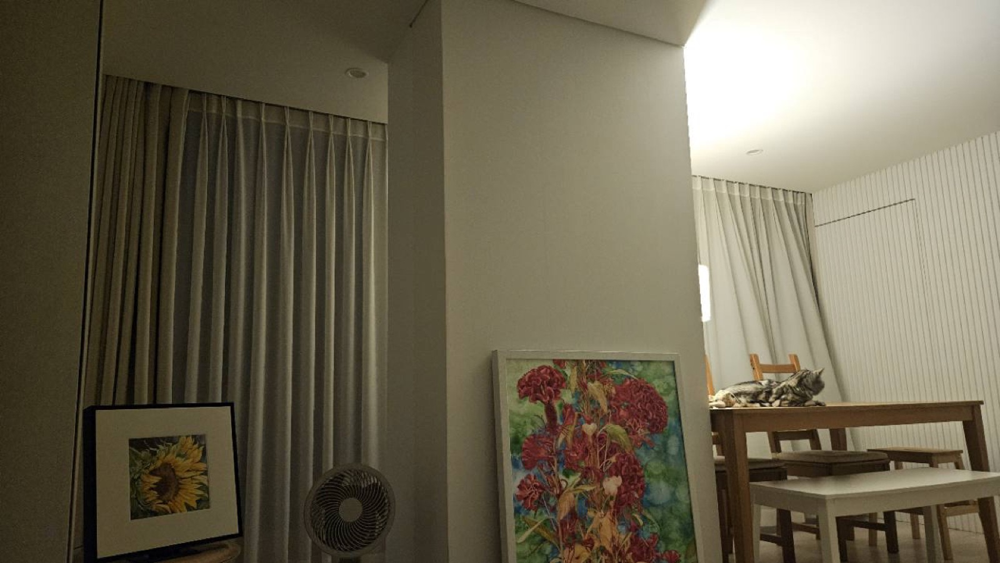

커튼 앞 작은 액자는 이미 입구 컷이다
어두운 커튼과 작은 해바라기 액자는 정리 부족이 아니라, 집의 첫 번째 조용한 시선이다. 이 위치는 작은 프린트와 깊은 매트 보더가 잘 맞는다.
Uploaded Room / Art Logic Applied
이 사진은 쇼룸이 아니라서 더 좋다. 회색 커튼, 선풍기, 기대어 둔 액자, 식탁, 고양이가 모두 남아 있다. ELURA의 역할은 이 생활감을 지우는 것이 아니라, 한 점의 아트가 집의 중심을 만드는 방식으로 편집하는 것이다.

01 02 03 04 05Room Reading
사진의 핵심은 중앙 기둥이 만든 두 개의 무대다. 왼쪽은 커튼과 작은 해바라기 액자로 닫힌 조용한 갤러리, 오른쪽은 식탁과 고양이가 있는 생활 무대, 중앙은 큰 꽃 작품이 두 공간을 묶는 표지 컷이 된다.
어두운 커튼과 작은 해바라기 액자는 정리 부족이 아니라, 집의 첫 번째 조용한 시선이다. 이 위치는 작은 프린트와 깊은 매트 보더가 잘 맞는다.
선풍기는 이 집이 실제로 사는 공간이라는 증거다. 명품감은 생활 물건을 없애서가 아니라, 그 옆의 아트가 시선을 선택하게 만들 때 생긴다.
가장 강한 컬러와 가장 큰 면적을 가진 작품이 중앙에 기대어 있다. 이 작품은 단순 장식이 아니라 브로슈어의 커버 이미지, 집의 색 코드, 구매 기대감을 만드는 장치다.
기둥은 방을 끊는 요소처럼 보이지만, 브로슈어에서는 왼쪽 갤러리와 오른쪽 다이닝 스테이지를 나누는 하우스 코드가 된다.
식탁, 의자, 세로 벽 패턴, 천장 조명은 생활의 밝은 무대다. 여기에 아트가 직접 걸리지 않아도 중앙 작품과 색이 이어지면 공간 전체가 한 권의 룩북처럼 읽힌다.
이미 있는 두 작품의 관계를 살린다. 큰 작품은 표지, 작은 작품은 생활의 낮은 음성이다.
이 메시지가 사용자의 기대감을 만든다. 내 집을 뜯어고치지 않아도 아트가 먼저 들어올 수 있다는 약속이다.
Spatial Essay
밤의 집은 언제나 조금 덜 정리되어 있고, 그래서 더 개인적이다. 이 공간에서 먼저 보이는 것은 비싼 가구가 아니다. 커튼의 무게, 낮은 위치의 액자, 선풍기의 원형, 기둥의 넓은 면, 식탁 위의 고양이가 먼저 보인다. 좋은 아트 브로슈어는 이 단서를 감추지 않고, 각각이 왜 필요한지 설명한다.
중앙에 기대어 둔 큰 꽃 작품은 이 집의 색을 결정한다. 붉은 꽃과 초록의 배경은 오른쪽 식탁의 따뜻한 목재, 왼쪽 해바라기 프린트의 노란 빛과 이어진다. 그래서 이 작품은 벽에 걸려 있지 않아도 이미 방의 주인공이다. ELURA의 제안은 새 가구를 사라는 말이 아니라, 이 작품을 집의 표지로 삼아 시선을 재배치하자는 말이다.
오른쪽 식탁에 누워 있는 고양이는 사진에서 가장 중요한 생활 증거다. 이 장면이 있기 때문에 사용자는 “내 집도 가능하다”고 느낀다. 명품감은 생활을 지운 결과가 아니라, 생활이 남아 있는데도 한 장면으로 보이는 편집에서 생긴다.
Content Output
업로드 사진 한 장을 기반으로 저장형 콘텐츠와 결제 전 브로슈어를 동시에 만든다.
커튼, 선풍기, 식탁, 고양이가 그대로 있는 집. 바뀌는 것은 생활이 아니라 시선이다.
완벽한 인테리어 사진이 필요하지 않다. 실제로 사는 방일수록 더 정확하게 읽을 수 있다.
Production Notes
이 데모는 원본 사진을 직접 콘텐츠화했다. 이미지 생성이 필요한 다음 단계에서는 아래 프롬프트로 같은 집의 아트 방향, 표지 크롭, 대체 작품 시안을 만들 수 있다.
Use the uploaded real room as reference. Preserve the central column, gray curtains, leaning sunflower frame, circular fan, colorful floral artwork, wood dining table, cat on the table, white vertical wall texture, and warm ceiling light. Create an art-led editorial brochure scene where the existing artworks become the house code. Keep the home ordinary, lived-in, and realistic. Do not make it a luxury apartment. No brand logos, no monograms, no readable text, no people.